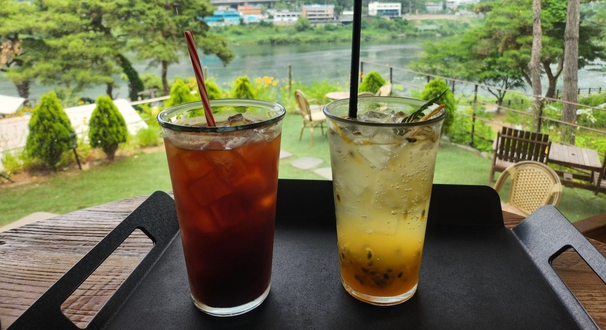
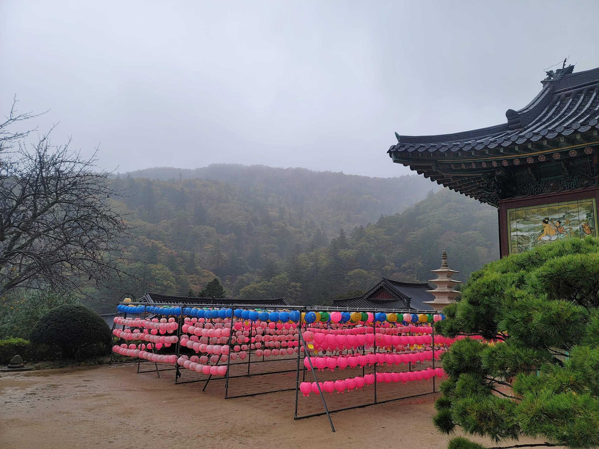
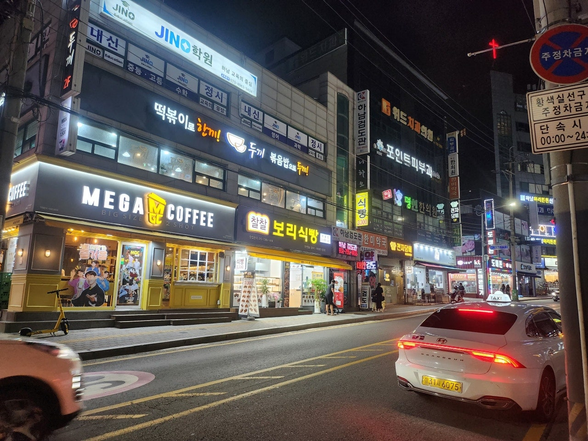

Food & Drink
Why Koreans Love Drinks Ice-Cold
In Korea, cold is never quite cold enough.
Curated by FloREAL KOREA WITH FLO
Hidden places. Everyday moments.
Real stories from a Korean local.

In Korea, cold is never quite cold enough.
Curated by Flo
Beyond the famous sights, Korea moves at a slower pace.
Curated by Flo
Neon streets, late dinners, and the rhythm of everyday nights.
Curated by Flo